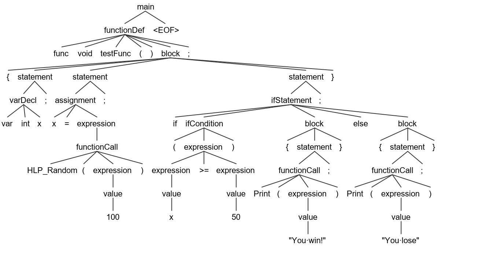

C# + Gothic + ANTLR4 -
we're making the compiler!
About us
Artur Kasperek
- Dzieje Khorinis programmers coordinator
- JS, TS Fullstack Freelance developer
- Computer Science student
About us
Krzysztof Jura <kisioj@gmail.com>
- Software developer
- Programming teacher (C, C++, Python)
- PyCzest founder (fb.com/pyczest)
Tools
- 3D World Editor
- Mod Package Builder
- Translation Tool
- Daedalus Compiler
Daedalus

Daedalus
- Gothic I and II scripting language
- has C-like syntax
- compiled to Daedalus bytecode
- have externals which call engine functions directly
instance PC_Thief_DI(Npc_Default)
{
name[0] = "Diego";
guild = GIL_NONE;
npcType = NPCTYPE_FRIEND;
aivar[AIV_ToughGuy] = TRUE;
B_SetAttributesToChapter(self,6);
fight_tactic = FAI_HUMAN_MASTER;
EquipItem(self,ItMw_1h_Sld_Sword);
daily_routine = Rtn_Start_31;
...
};
Daedalus Compiler
Daedalus flaws
- no for or while loop
- has classes but no methods
- requires ; after }
- constants can be modified
Compiler
A compiler is computer software that transforms computer code written in one programming language (the source language) into another programming language (the target language).
How does the compiler work?
Compilation
1. lexical analysis
2. parsing (syntactic analysis)
3. semantic analysis, IR generation
4. code generation
1. Lexical analysis
🡆
2. Parsing (syntactic analysis)
3. Semantic analysis
var int random;
radom = 5;
var int num;
num = "five";
var int x;
var int x;
object.nonExistingAttribute = 100;
func int testFunc() {};
3. Intermediate representation generation
🡆
4. Code generation

🡆
Let's make a compiler
Q: What do I need to start?
A: C# + ANTLR4!
Q: Ok, done. What now?
A: Create lexical and syntactic grammar!
Q: Ok, done. What now?
A: Create lexical and syntactic grammar!
Lexical grammar
Lexical analysis
🡆
Syntactic grammar
Parsing (syntactic analysis)
Daedalus.g4
Generate Lexer, Parser and Listener
What our compiler can do for now moment ?
- Load SRC file
- Compile Daedalus code and generate DAT file
- Detect errors with default ANTLR error strategy
- Generate CSL files ( Gothic Engine Dialog file )
- Generate readable assembler (WIP)
Demo

Some interesting problems during development
Things about Daedalus discovered during compiler development
if 5 < 2 {
};
if ( a > b ) {
b;
};
What we plan to add ?
-
Better error handling
- Lexical errors
- Semantic errors
- Add booleans ( software support )
- Add loops (for, while, foreach)
- Possibility to define methods in classes
- Add translation string ( feature needed for translation tool )
- Add operations on float ( software support )
- And ... features suggested by You, community and all Daedalus users ;)
Do we write tests ?

Just kidding!
Yes, we do!
And their helped us!!
We write unit tests

We write e2e tests

We use CircleCI for automation

Thanks to:

We can run compiler on:

We need C# programmers
Thank you and Bye
Questions ?

github.com/dzieje-khorinis/DaedalusCompiler